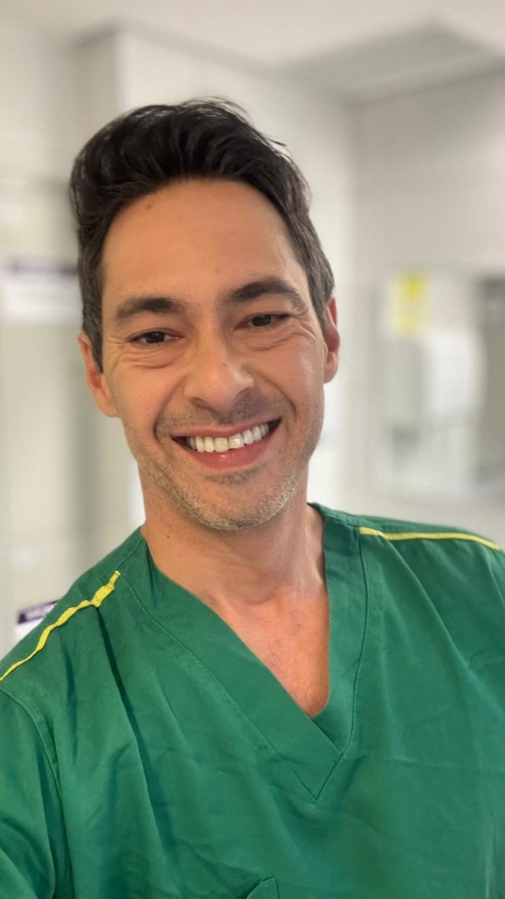
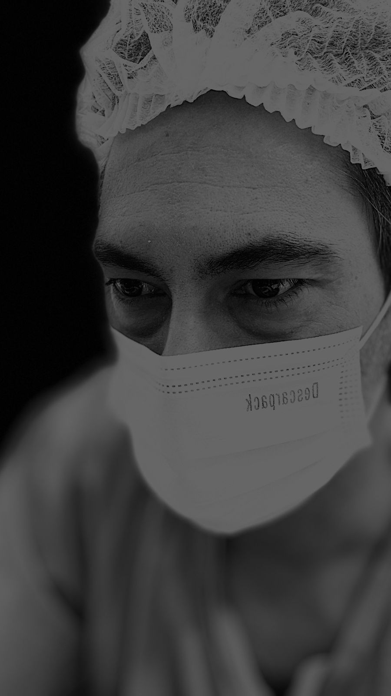

Até 2h de consulta
Profundidade clínica real, sem pressa. O tempo necessário para entender a sua história completa.
Mais de uma década dedicada a redefinir o cuidado em obesidade — com profundidade clínica, ciência e presença humana.
Uma clínica boutique para quem busca atendimento verdadeiramente individualizado. Cada jornada é estruturada em fases claras, conduzida por uma relação humana próxima, contínua e profundamente comprometida com o seu tempo.
Formado pela Universidade Federal em 2007, com especialização em São Paulo e atuação em hospitais de referência como Rede D'Or, São Camilo e Américas. Pioneiro no tratamento humanizado da obesidade, combina técnica refinada com uma abordagem profundamente individualizada — onde cada paciente é conduzido com tempo, escuta e precisão.
Medicina de proximidade não é discurso — é a forma de conduzir cada encontro, cada gesto técnico, cada minuto de centro cirúrgico. O que você vê aqui é o trabalho como ele acontece.


Antes de qualquer decisão, uma conversa de até 2 horas. Particular, profunda, estratégica — porque transformação real exige tempo e atenção verdadeira.
Cada história é atravessada por causas que não cabem em 15 minutos. Por isso reservamos até duas horas para entender o seu contexto clínico, emocional e metabólico — antes de qualquer indicação.
Profundidade clínica real, sem pressa. O tempo necessário para entender a sua história completa.
Corpo, mente e história analisados em conjunto — porque obesidade é multifatorial e merece olhar completo.
Cirúrgico ou clínico, traçado conforme a sua realidade — nunca o contrário. Decisões com base em ciência e contexto.
Antes, durante e depois. Uma jornada estruturada que não termina na cirurgia — porque cuidado é constância.
Atendimento exclusivamente particular. A cirurgia pode ser realizada por convênio ou particular, conforme o plano.
Cirurgia bariátrica de excelência e protocolos integrativos que cuidam de você em todas as fases — antes, durante e além.
"Técnica avançada. Decisão consciente. Resultado duradouro."
Redução de aproximadamente 80% do estômago, realizada por laparoscopia. Atua diretamente sobre os hormônios da fome e da saciedade, com melhora consistente em diabetes tipo 2 e hipertensão.
Combinação de bolsa gástrica reduzida e desvio intestinal — referência mundial em perda ponderal significativa e duradoura, com expressiva melhora metabólica e remissão de comorbidades.
Indicada para cálculos biliares e colecistite, realizada por via minimamente invasiva. Procedimento de recuperação rápida, com retorno precoce às atividades cotidianas.
Tratamento das fraquezas da parede abdominal — inguinais, umbilicais ou incisionais. Abordagem por laparoscopia ou aberta, definida conforme a indicação clínica individual.
"Protocolos intravenosos semanais para regular o que está por trás do peso, da exaustão e do desequilíbrio."
"Você já tentou de tudo. Dietas, treinos, promessas. E o corpo continua resistindo."
Por isso desenvolvemos uma jornada que vai além do visível — protocolos integrativos, cirurgia quando necessária, e acompanhamento que respeita o seu tempo.
"O que você já tentou até aqui?"
Conversar com o Dr. Luciano Atendimento exclusivo via Direct do InstagramInstagram ou WhatsApp — discreto e direto.
Até 2h de profundidade real.
Cirúrgico ou clínico — sua realidade no centro.
Cirurgia e/ou protocolos integrativos.
Pós estruturado, sempre próximo.
Cirurgião nota 1000. Qualificado, atencioso e profissional de primeira. A equipe multidisciplinar é excelente e o atendimento, maravilhoso do início ao fim. Super indico.
A consulta foi tudo o que eu precisava encontrar depois de anos tentando. O Dr. Luciano me ouviu de verdade, explicou cada detalhe e me deu segurança para tomar a decisão. Hoje, oito meses depois, tenho minha vida de volta.
O que mais me marcou foi o acompanhamento. Não é só a cirurgia. É antes, durante e depois — sempre com retorno rápido, sempre próximo. Confio nele e na equipe como confio em poucos profissionais.
Eu já tinha tentado de tudo. Procurei o Dr. Luciano por indicação e a diferença começou já na primeira consulta — duas horas de conversa profunda, sem pressa, sem pressão. Saí de lá entendendo meu corpo pela primeira vez.
Depoimentos baseados em relatos reais de pacientes. Identidades preservadas conforme solicitação.
Vagas limitadas. Atendimento personalizado.